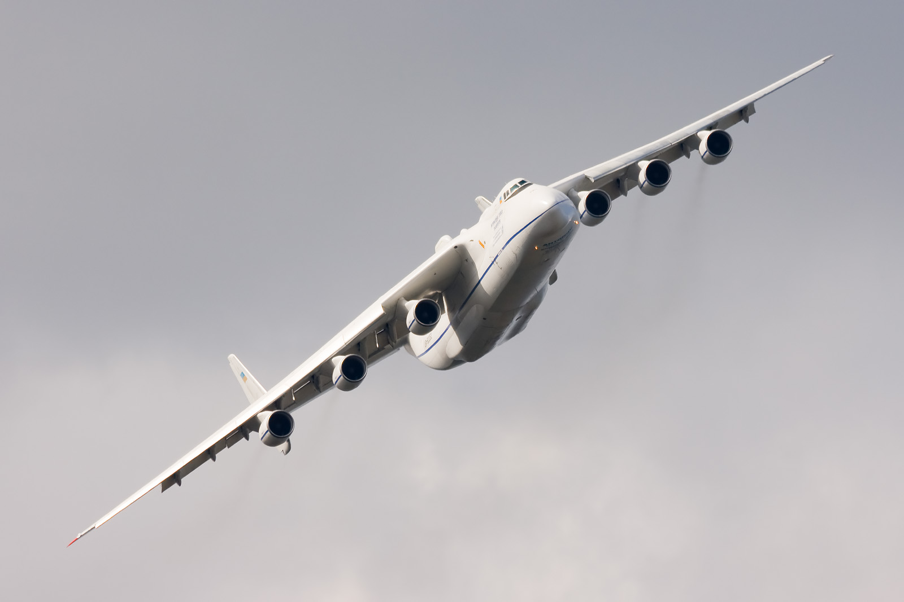

Ан-225 «Мрия»

Ан-225 в полёте
| Тип | Грузовой самолет |
| Разработчик |
ОКБ им. О. К. Антонова |
| Производитель | КиАПО |
| Главный конструктор |
П. В. Балабуев
В. И. Толмачев |
| Первый полёт | 21 декабра 1988 года |
| Начало эксплуатации | 1989 год |
| Статус | эксплуатируется |
| Основной эксплуатант |  Авиалинии Антонова
Авиалинии Антонова |
| Годы производства | 1988 год |
| Единиц произведено | 1 |
| Базовая модель | Ан-124 "Руслан" |
 Изображение на Викискладе
Изображение на Викискладе